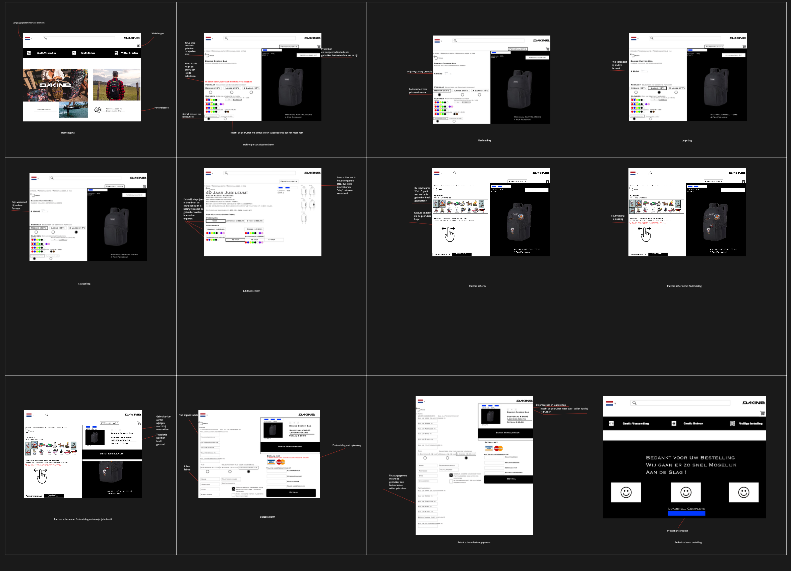
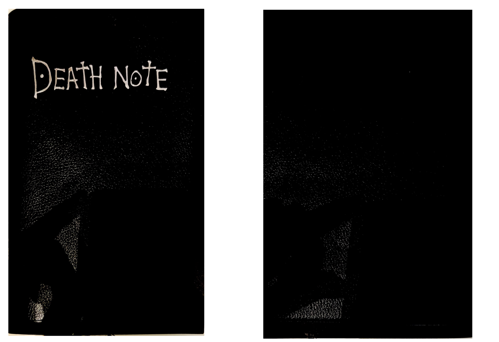
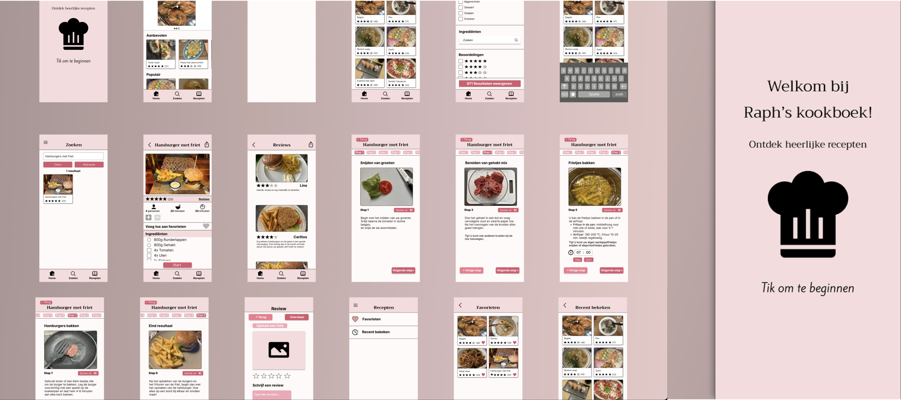
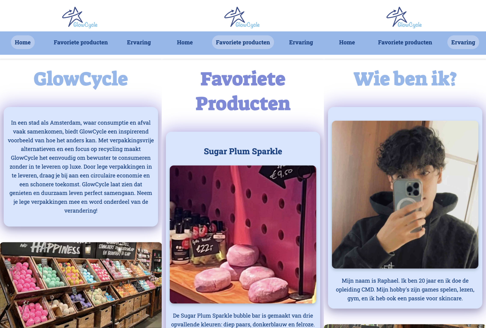
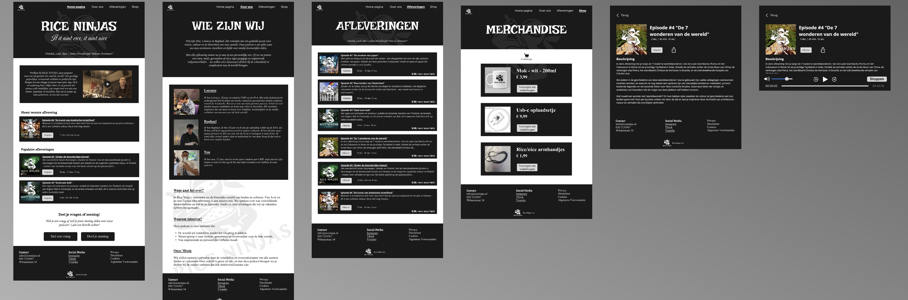
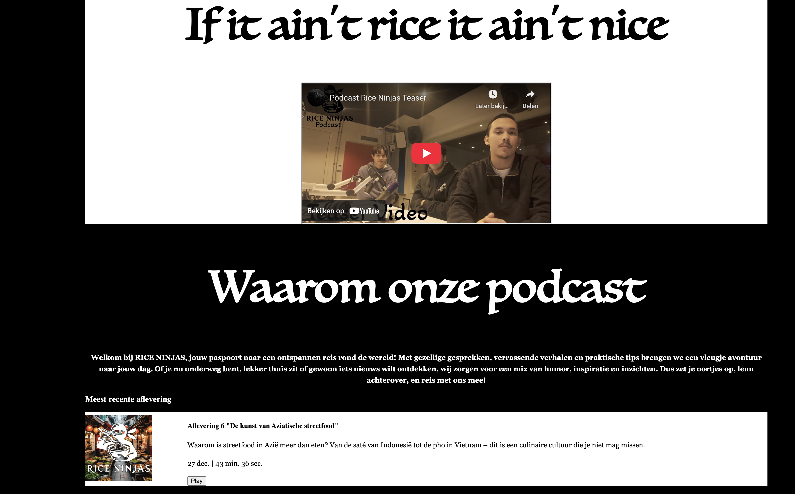
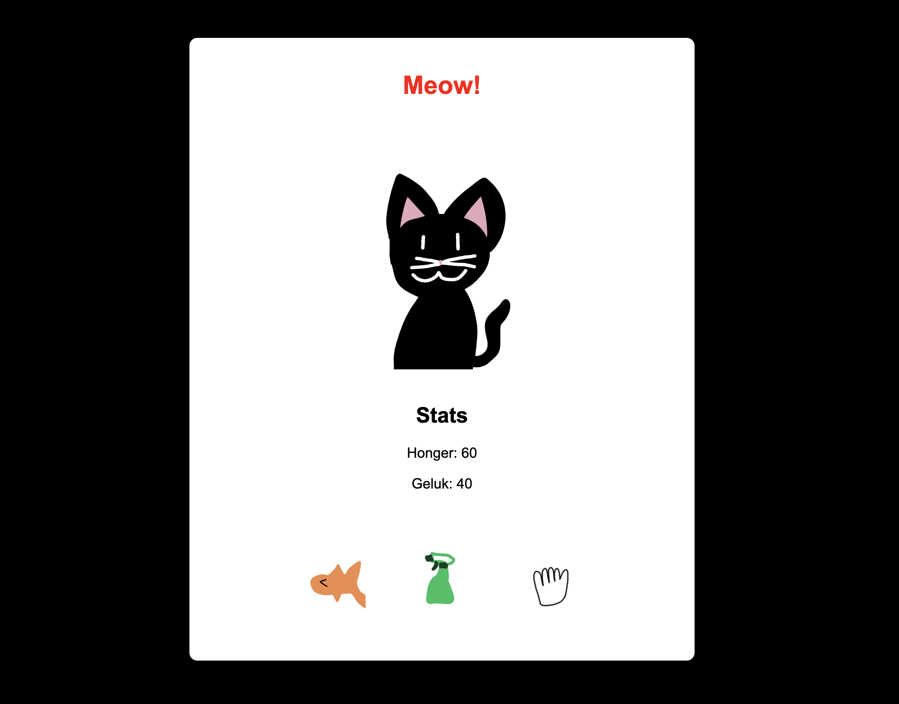
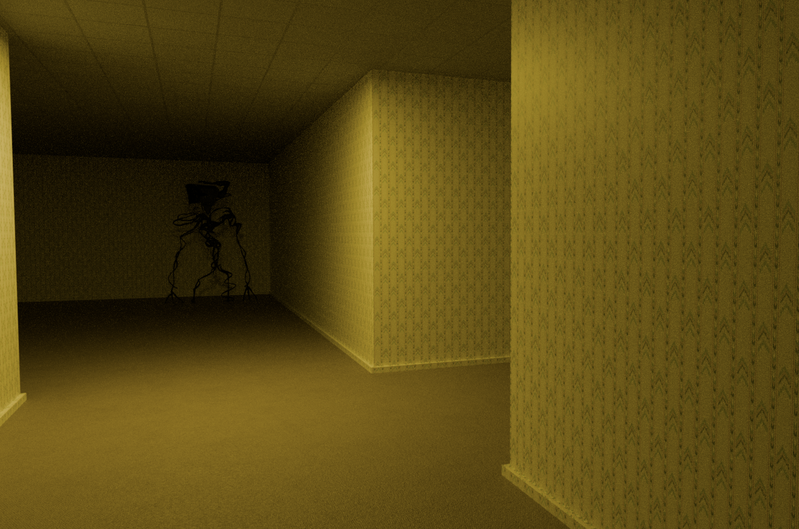
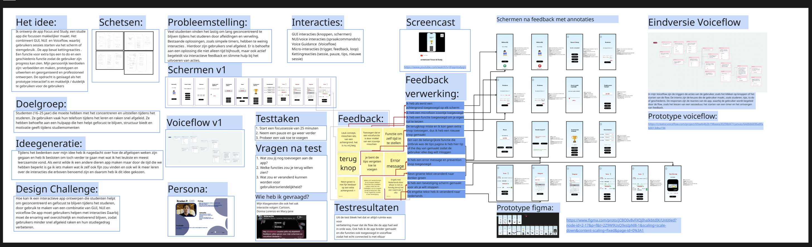
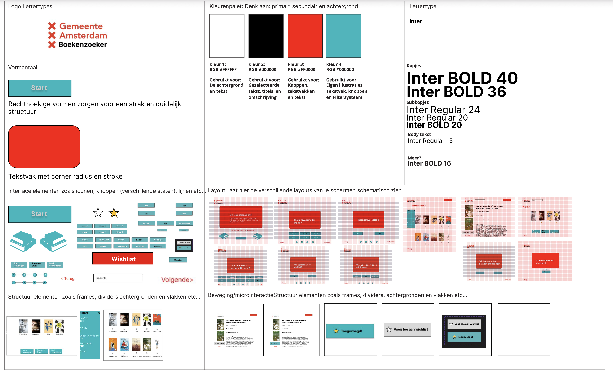

Mijn werk
Tijdens mijn opleiding heb ik gewerkt aan verschillende projecten die zal ik hieronder laten zien.

HCI
Tijdens HCI hebben wij geleerd hoe je een website maakt die gebruikersvriendelijk is, Dit hebben wij gedaan voor Dakine. Ik vond dit project zowel leerzaam en leuk en ik heb er veel van geleerd door de methodes die wij bij dit vak hebben gehad toe te passen.

UCD
Tijdens UCD hebben wij vooral geleerd over onderzoek methodes, Het vak heet ook user centered design en wij hebben gekozen voor de Pathe opdracht om te kijken hoe wij de problemen van de schermen nog vriendelijker maken, Ik vond UCD geen leuk vak maar het was wel leerzaam omdat onze docent ons goed uitleg gaf.

Ontwerpgeschiedenis
Tijdens ontwerpgeschiedenis hebben wij geleerd hoe wij sketchnotes moesten maken over podcasts en natuurlijk over hoe ontwerpen tot stand is gekomen. Ik vond dit vak wel interessant en ik heb veel geleerd over het maken van sketchnotes. De foto hierbij is mijn kaft die ik heb gemaakt het is van de anime Death Note.

Project Team 1
Tijdens dit project hebben wij samen een receptenapp gemaakt genaamd Raph's Kookboek, hier hebben wij vooral leren samen werken en werken met compenenten in Figma. Ik vond dit project leuk omdat wij weer aan het ontwerpen waren en doordat wij elkaar konden ondersteunen met de moeilijke dingen.

Project invidueel 1
Tijdens dit project heb ik een website gemaakt voor Lush, het idee was om een groene onderwerp te kiezen in Amsterdam, dit project heet de lieve groene stad en hier heb ik geleerd over prototypen en ook meer over HTML en CSS

Content
Voor dit vak heb ik samen met mijn groepsgenoten geleerd hoe je content maakt, van het maken van een website, een eigen product, eigen stickers en zelfs een eigen filmpje. Ik vond content heel leerzaam en leuk omdat ik leuk samen had gewerkt en veel geleerd heb over hoe content in elkaar zit.

Internetstandaarden
Voor internetstandaarden heb ik een HTML CSS website gemaakt voor mijn content mockup website die ik in Figma gedesigned had, Ik heb veel geleerd over HTML en CSS en ik vond dit ook interessant om te leren en mezelf in te verbeteren

Inleiding Programmeren
Voor inleiding programmeren, hebben wij geleerd hoe je HTML en CSS combineert met Javascript. Dit was een uitdaging voor mij, we zijn begonnen met schetsen maken voor onze website en ik heb besloten een tamagotchi te maken dit is een virtueel huisdier wat geprogrammeerd was met javascript is dat de knoppen ervoor zorgen dat er een actie gebeurd. Dit vak vond ik heel leerzaam en stressvol tegelijk maar ik heb wel veel geleerd ervan

3D
Voor dit vak moest je zelf iets kiezen om te ontwerpen in Blender. Ik heb de Backrooms gekozen, omdat ik dit een interessant onderwerp vind. Met deze opdracht heb ik verschillende methodes en technieken in Blender geleerd. Ik heb geleerd hoe ik objecten kan maken, materialen kan toevoegen en met licht en cameras kan werken. Ook heb ik geleerd om beter op details te letten en problemen zelf op te lossen.

Interactie
Bij dit vak heb ik geleerd hoe je van een idee naar een uiteindelijk prototype gaat. Ik heb geleerd om te werken met een doelgroep, persona, voiceflow en verschillende interacties. Ook heb ik geleerd hoe je prototypes maakt en deze door middel van feedback en testen steeds kunt verbeteren. Hierdoor begrijp ik beter hoe je een ontwerp gebruiksvriendelijk en passend voor de gebruiker maakt.

Visual interface design
Voor deze opdracht heb ik een interface ontworpen voor de boekenzoeker van de Gemeente Amsterdam. Ik heb hierbij een eenvoudig en overzichtelijk ontwerp gemaakt dat gericht is op middelbare scholieren. Door voorkeuren in te vullen kan de gebruiker passende boeken vinden en deze toevoegen aan een Wishlist. Ook heb ik gekeken naar een passende eigen stijl binnen de huisstijl van de opdrachtgever, zodat het ontwerp aantrekkelijker is voor de doelgroep. Tijdens het proces heb ik zowel de functionaliteit als de visuele vormgeving stap voor stap uitgewerkt.